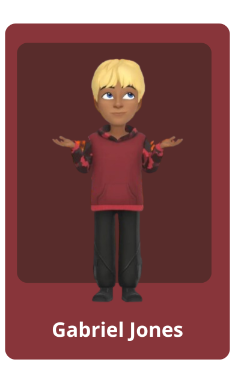

|  |
Chi sono?Conosciuto come onlygabby, il mio nome è Gabriel, sono un nerd, sono esperto nella formazione di pagine statiche e blog, sono un amante del coding, certo, ogni tanto mi fa un po' sclerare, ma comunque io mi diverto, è una passione, con la formazione di siti web mi piace soprattutto la parte in HTML e meno la parte in CSS, comunque sto imparando un po' tutto da zero, mi interessano molti linguaggi di programmazione (html, css, lua e PHP), attualmente sto lavorando nella formazione di siti web in html e css su github! |
Il mio blog
Ho un blog su Tumblr, è un social un po' vecchio ma valido. Lì ospito il mio blog perché amo scrivere. Sono felice che finalmente la gente possa vedere le mie scritture, anche se non ho molte visualizzazioni. Per me il fatto che siano già pubbliche è qualcosa...
GabbyUpdates
Ho un sito degli aggiornamenti...
Accesso al codice
Puoi accedere tranquillamente al codice dall'URL da qui.